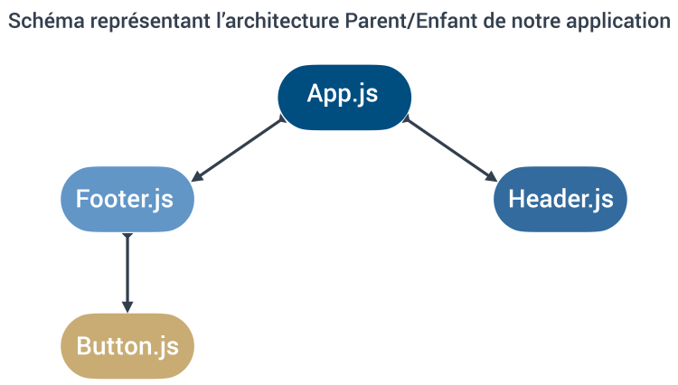

Supposons que nous voulions créer un footer pour notre application et l’instancier dans notre composant « App.js », juste après le composant « Header.js » que nous avons déjà créé. Ce composant de footer devrait contenir un autre composant, qui sera un bouton.
Créez un composant « Footer.js » qui contient un paragraphe, puis retournez-le dans notre composant « App.js » pour pouvoir le visualiser dans le navigateur.
Le code de notre composant pourrait ressembler à ceci :
See the Pen Untitled by OpenSpirit (@OpenSpirit) on CodePen.
Ici nous avons un cas d’utilisation qui démontre qu’il n’est pas nécessaire d’utiliser les parenthèses dans notre « return » dans le cas ou n’avons qu’un seul élément JSX à retourner.
Et dans notre fichier « App.js », nous pourrions l’utiliser avec le code suivant :
See the Pen Untitled by OpenSpirit (@OpenSpirit) on CodePen.
Enfin, vous devez créer un nouveau composant « Button.js » qui sera intégré à notre composant « Footer.js »
Notre composant Button.js pourrait être codé de cette manière :
See the Pen Untitled by OpenSpirit (@OpenSpirit) on CodePen.
Et ensuite nous pourrions utiliser ce nouveau composant dans notre composant « Footer.js » en l’utilisant de cette manière :
See the Pen Untitled by OpenSpirit (@OpenSpirit) on CodePen.
Voici un schéma qui représente l’architecture Parent/Enfant de notre application :
